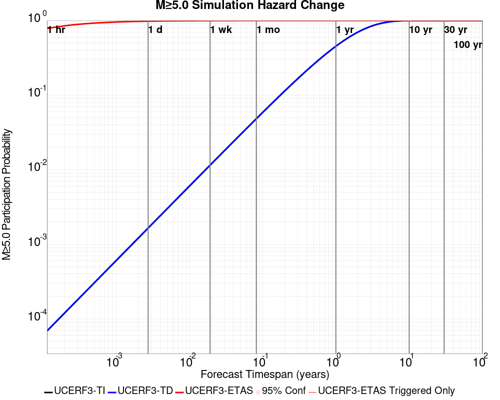
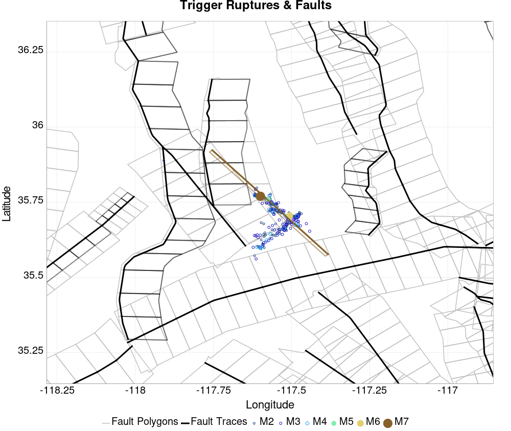
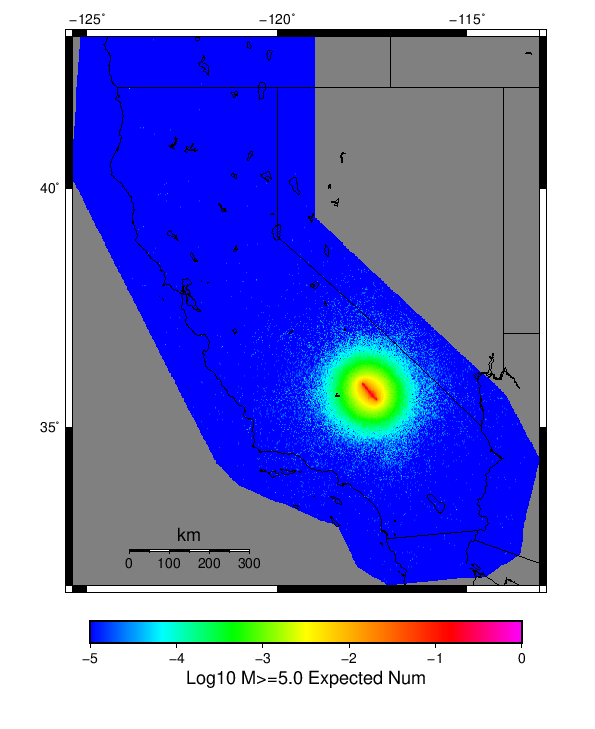
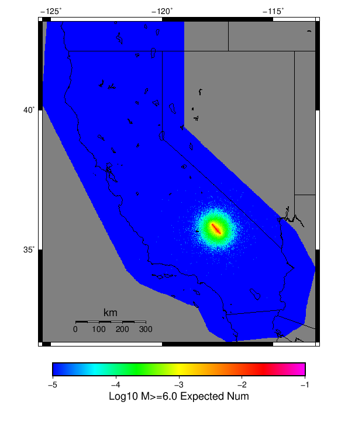

| ComCat M7.1 (ci38457511), Finite Surface, No Faults | |
|---|---|
| Num Simulations | 100000 |
| Start Time | 2019/07/06 03:19:54 UTC |
| Start Time Epoch Milliseconds | 1562383194040 |
| Duration | 10 Years |
| Includes Spontaneous? | false |
| Trigger Ruptures | 219 Trigger Ruptures |
| First: M3.98 at 2019/07/04 17:02:55 UTC | |
| Last: M7.1 at 2019/07/06 03:19:53 UTC | |
| Largest: M7.1 at 2019/07/06 03:19:53 UTC | |
| Historical Ruptures | (none) |
Legend
| Mag | Mean | 2.5 %ile | 97.5 %ile | Median | Mode | 10 yr Probability | 10 yr Supra-Seis Prob | Primary Aftershocks Mean |
|---|---|---|---|---|---|---|---|---|
| M≥5 | 24.703 | 6.000 | 111.000 | 16.000 | 13.000 | 1.000 | 0.000 | 7.533 |
| M≥5.1 | 19.614 | 4.000 | 88.000 | 13.000 | 10.000 | 1.000 | 0.000 | 5.986 |
| M≥5.2 | 15.582 | 3.000 | 71.000 | 10.000 | 8.000 | 0.999 | 0.000 | 4.759 |
| M≥5.3 | 12.370 | 2.000 | 57.000 | 8.000 | 6.000 | 0.997 | 0.000 | 3.779 |
| M≥5.4 | 9.820 | 1.000 | 45.000 | 6.000 | 4.000 | 0.990 | 0.000 | 2.999 |
| M≥5.5 | 7.802 | 1.000 | 36.000 | 5.000 | 4.000 | 0.976 | 0.000 | 2.384 |
| M≥5.6 | 6.196 | 0.000 | 29.000 | 4.000 | 3.000 | 0.950 | 0.000 | 1.893 |
| M≥5.7 | 4.921 | 0.000 | 24.000 | 3.000 | 2.000 | 0.913 | 0.000 | 1.505 |
| M≥5.8 | 3.906 | 0.000 | 19.000 | 2.000 | 1.000 | 0.861 | 0.000 | 1.194 |
| M≥5.9 | 3.100 | 0.000 | 16.000 | 2.000 | 1.000 | 0.798 | 0.000 | 0.948 |
| M≥6 | 2.460 | 0.000 | 13.000 | 1.000 | 0.000 | 0.726 | 0.000 | 0.751 |
| M≥6.1 | 1.949 | 0.000 | 11.000 | 1.000 | 0.000 | 0.649 | 0.000 | 0.593 |
| M≥6.2 | 1.548 | 0.000 | 9.000 | 1.000 | 0.000 | 0.573 | 0.000 | 0.471 |
| M≥6.3 | 1.224 | 0.000 | 7.000 | 0.000 | 0.000 | 0.499 | 0.000 | 0.372 |
| M≥6.4 | 0.969 | 0.000 | 6.000 | 0.000 | 0.000 | 0.428 | 0.000 | 0.293 |
| M≥6.5 | 0.765 | 0.000 | 5.000 | 0.000 | 0.000 | 0.362 | 0.000 | 0.232 |
| M≥6.6 | 0.606 | 0.000 | 4.000 | 0.000 | 0.000 | 0.306 | 0.000 | 0.184 |
| M≥6.7 | 0.478 | 0.000 | 4.000 | 0.000 | 0.000 | 0.256 | 0.000 | 0.145 |
| M≥6.8 | 0.377 | 0.000 | 3.000 | 0.000 | 0.000 | 0.212 | 0.000 | 0.115 |
| M≥6.9 | 0.297 | 0.000 | 3.000 | 0.000 | 0.000 | 0.174 | 0.000 | 0.090 |
| M≥7 | 0.234 | 0.000 | 2.000 | 0.000 | 0.000 | 0.144 | 0.000 | 0.071 |
| M≥7.1 | 0.184 | 0.000 | 2.000 | 0.000 | 0.000 | 0.118 | 0.000 | 0.056 |
| M≥7.2 | 0.144 | 0.000 | 2.000 | 0.000 | 0.000 | 0.096 | 0.000 | 0.043 |
| M≥7.3 | 0.112 | 0.000 | 1.000 | 0.000 | 0.000 | 0.077 | 0.000 | 0.034 |
| M≥7.4 | 0.086 | 0.000 | 1.000 | 0.000 | 0.000 | 0.061 | 0.000 | 0.025 |
| M≥7.5 | 0.066 | 0.000 | 1.000 | 0.000 | 0.000 | 0.049 | 0.000 | 0.019 |
| M≥7.6 | 0.050 | 0.000 | 1.000 | 0.000 | 0.000 | 0.038 | 0.000 | 0.014 |
| M≥7.7 | 0.036 | 0.000 | 1.000 | 0.000 | 0.000 | 0.029 | 0.000 | 0.011 |
| M≥7.8 | 0.027 | 0.000 | 0.000 | 0.000 | 0.000 | 0.022 | 0.000 | 7.74E-3 |
| M≥7.9 | 0.018 | 0.000 | 0.000 | 0.000 | 0.000 | 0.016 | 0.000 | 5.28E-3 |
| M≥8 | 0.012 | 0.000 | 0.000 | 0.000 | 0.000 | 0.011 | 0.000 | 3.45E-3 |
| M≥8.1 | 7.27E-3 | 0.000 | 0.000 | 0.000 | 0.000 | 6.71E-3 | 0.000 | 2.09E-3 |
| M≥8.2 | 3.32E-3 | 0.000 | 0.000 | 0.000 | 0.000 | 3.19E-3 | 0.000 | 9.90E-4 |
| M≥8.3 | 0.000 | 0.000 | 0.000 | 0.000 | 0.000 | 0.000 | 0.000 | 0.000 |
| M≥8.4 | 0.000 | 0.000 | 0.000 | 0.000 | 0.000 | 0.000 | 0.000 | 0.000 |
| M≥8.5 | 0.000 | 0.000 | 0.000 | 0.000 | 0.000 | 0.000 | 0.000 | 0.000 |
| M≥8.6 | 0.000 | 0.000 | 0.000 | 0.000 | 0.000 | 0.000 | 0.000 | 0.000 |
| M≥8.7 | 0.000 | 0.000 | 0.000 | 0.000 | 0.000 | 0.000 | 0.000 | 0.000 |
| M≥8.8 | 0.000 | 0.000 | 0.000 | 0.000 | 0.000 | 0.000 | 0.000 | 0.000 |
| M≥8.9 | 0.000 | 0.000 | 0.000 | 0.000 | 0.000 | 0.000 | 0.000 | 0.000 |
| M≥9 | 0.000 | 0.000 | 0.000 | 0.000 | 0.000 | 0.000 | 0.000 | 0.000 |
Legend

| Mag | Mean | 2.5 %ile | 97.5 %ile | Median | Mode | 1 yr Probability | 1 yr Supra-Seis Prob | Primary Aftershocks Mean |
|---|---|---|---|---|---|---|---|---|
| M≥5 | 16.924 | 4.000 | 64.000 | 12.000 | 10.000 | 1.000 | 0.000 | 6.561 |
| M≥5.1 | 13.439 | 3.000 | 52.000 | 10.000 | 8.000 | 0.999 | 0.000 | 5.215 |
| M≥5.2 | 10.682 | 2.000 | 41.000 | 8.000 | 6.000 | 0.997 | 0.000 | 4.146 |
| M≥5.3 | 8.475 | 1.000 | 33.000 | 6.000 | 5.000 | 0.991 | 0.000 | 3.290 |
| M≥5.4 | 6.725 | 1.000 | 27.000 | 5.000 | 4.000 | 0.977 | 0.000 | 2.611 |
| M≥5.5 | 5.342 | 0.000 | 22.000 | 4.000 | 3.000 | 0.952 | 0.000 | 2.075 |
| M≥5.6 | 4.243 | 0.000 | 18.000 | 3.000 | 2.000 | 0.913 | 0.000 | 1.648 |
| M≥5.7 | 3.372 | 0.000 | 15.000 | 2.000 | 1.000 | 0.861 | 0.000 | 1.310 |
| M≥5.8 | 2.677 | 0.000 | 12.000 | 2.000 | 1.000 | 0.797 | 0.000 | 1.040 |
| M≥5.9 | 2.124 | 0.000 | 10.000 | 1.000 | 1.000 | 0.725 | 0.000 | 0.825 |
| M≥6 | 1.684 | 0.000 | 8.000 | 1.000 | 0.000 | 0.646 | 0.000 | 0.654 |
| M≥6.1 | 1.335 | 0.000 | 7.000 | 1.000 | 0.000 | 0.567 | 0.000 | 0.516 |
| M≥6.2 | 1.060 | 0.000 | 6.000 | 0.000 | 0.000 | 0.492 | 0.000 | 0.410 |
| M≥6.3 | 0.838 | 0.000 | 5.000 | 0.000 | 0.000 | 0.421 | 0.000 | 0.324 |
| M≥6.4 | 0.664 | 0.000 | 4.000 | 0.000 | 0.000 | 0.355 | 0.000 | 0.255 |
| M≥6.5 | 0.524 | 0.000 | 4.000 | 0.000 | 0.000 | 0.298 | 0.000 | 0.202 |
| M≥6.6 | 0.416 | 0.000 | 3.000 | 0.000 | 0.000 | 0.248 | 0.000 | 0.160 |
| M≥6.7 | 0.327 | 0.000 | 3.000 | 0.000 | 0.000 | 0.205 | 0.000 | 0.126 |
| M≥6.8 | 0.258 | 0.000 | 2.000 | 0.000 | 0.000 | 0.168 | 0.000 | 0.100 |
| M≥6.9 | 0.203 | 0.000 | 2.000 | 0.000 | 0.000 | 0.137 | 0.000 | 0.078 |
| M≥7 | 0.159 | 0.000 | 2.000 | 0.000 | 0.000 | 0.111 | 0.000 | 0.061 |
| M≥7.1 | 0.126 | 0.000 | 1.000 | 0.000 | 0.000 | 0.090 | 0.000 | 0.048 |
| M≥7.2 | 0.098 | 0.000 | 1.000 | 0.000 | 0.000 | 0.073 | 0.000 | 0.037 |
| M≥7.3 | 0.076 | 0.000 | 1.000 | 0.000 | 0.000 | 0.058 | 0.000 | 0.029 |
| M≥7.4 | 0.058 | 0.000 | 1.000 | 0.000 | 0.000 | 0.046 | 0.000 | 0.022 |
| M≥7.5 | 0.045 | 0.000 | 1.000 | 0.000 | 0.000 | 0.036 | 0.000 | 0.017 |
| M≥7.6 | 0.033 | 0.000 | 1.000 | 0.000 | 0.000 | 0.028 | 0.000 | 0.013 |
| M≥7.7 | 0.025 | 0.000 | 0.000 | 0.000 | 0.000 | 0.021 | 0.000 | 9.21E-3 |
| M≥7.8 | 0.018 | 0.000 | 0.000 | 0.000 | 0.000 | 0.016 | 0.000 | 6.65E-3 |
| M≥7.9 | 0.012 | 0.000 | 0.000 | 0.000 | 0.000 | 0.011 | 0.000 | 4.59E-3 |
| M≥8 | 8.18E-3 | 0.000 | 0.000 | 0.000 | 0.000 | 7.52E-3 | 0.000 | 3.04E-3 |
| M≥8.1 | 5.05E-3 | 0.000 | 0.000 | 0.000 | 0.000 | 4.81E-3 | 0.000 | 1.90E-3 |
| M≥8.2 | 2.35E-3 | 0.000 | 0.000 | 0.000 | 0.000 | 2.29E-3 | 0.000 | 9.30E-4 |
| M≥8.3 | 0.000 | 0.000 | 0.000 | 0.000 | 0.000 | 0.000 | 0.000 | 0.000 |
| M≥8.4 | 0.000 | 0.000 | 0.000 | 0.000 | 0.000 | 0.000 | 0.000 | 0.000 |
| M≥8.5 | 0.000 | 0.000 | 0.000 | 0.000 | 0.000 | 0.000 | 0.000 | 0.000 |
| M≥8.6 | 0.000 | 0.000 | 0.000 | 0.000 | 0.000 | 0.000 | 0.000 | 0.000 |
| M≥8.7 | 0.000 | 0.000 | 0.000 | 0.000 | 0.000 | 0.000 | 0.000 | 0.000 |
| M≥8.8 | 0.000 | 0.000 | 0.000 | 0.000 | 0.000 | 0.000 | 0.000 | 0.000 |
| M≥8.9 | 0.000 | 0.000 | 0.000 | 0.000 | 0.000 | 0.000 | 0.000 | 0.000 |
| M≥9 | 0.000 | 0.000 | 0.000 | 0.000 | 0.000 | 0.000 | 0.000 | 0.000 |
Legend
| Mag | Mean | 2.5 %ile | 97.5 %ile | Median | Mode | 1 mo Probability | 1 mo Supra-Seis Prob | Primary Aftershocks Mean |
|---|---|---|---|---|---|---|---|---|
| M≥5 | 10.739 | 2.000 | 33.000 | 9.000 | 7.000 | 0.999 | 0.000 | 5.331 |
| M≥5.1 | 8.528 | 2.000 | 27.000 | 7.000 | 6.000 | 0.996 | 0.000 | 4.236 |
| M≥5.2 | 6.776 | 1.000 | 22.000 | 5.000 | 4.000 | 0.988 | 0.000 | 3.367 |
| M≥5.3 | 5.378 | 0.000 | 18.000 | 4.000 | 3.000 | 0.971 | 0.000 | 2.674 |
| M≥5.4 | 4.266 | 0.000 | 15.000 | 3.000 | 2.000 | 0.942 | 0.000 | 2.122 |
| M≥5.5 | 3.389 | 0.000 | 12.000 | 3.000 | 2.000 | 0.898 | 0.000 | 1.685 |
| M≥5.6 | 2.692 | 0.000 | 10.000 | 2.000 | 1.000 | 0.840 | 0.000 | 1.338 |
| M≥5.7 | 2.141 | 0.000 | 8.000 | 1.000 | 1.000 | 0.771 | 0.000 | 1.065 |
| M≥5.8 | 1.700 | 0.000 | 7.000 | 1.000 | 0.000 | 0.695 | 0.000 | 0.845 |
| M≥5.9 | 1.348 | 0.000 | 6.000 | 1.000 | 0.000 | 0.616 | 0.000 | 0.671 |
| M≥6 | 1.067 | 0.000 | 5.000 | 1.000 | 0.000 | 0.535 | 0.000 | 0.531 |
| M≥6.1 | 0.845 | 0.000 | 4.000 | 0.000 | 0.000 | 0.458 | 0.000 | 0.419 |
| M≥6.2 | 0.672 | 0.000 | 4.000 | 0.000 | 0.000 | 0.389 | 0.000 | 0.333 |
| M≥6.3 | 0.530 | 0.000 | 3.000 | 0.000 | 0.000 | 0.326 | 0.000 | 0.263 |
| M≥6.4 | 0.420 | 0.000 | 3.000 | 0.000 | 0.000 | 0.271 | 0.000 | 0.207 |
| M≥6.5 | 0.332 | 0.000 | 2.000 | 0.000 | 0.000 | 0.224 | 0.000 | 0.164 |
| M≥6.6 | 0.263 | 0.000 | 2.000 | 0.000 | 0.000 | 0.184 | 0.000 | 0.130 |
| M≥6.7 | 0.207 | 0.000 | 2.000 | 0.000 | 0.000 | 0.150 | 0.000 | 0.102 |
| M≥6.8 | 0.163 | 0.000 | 2.000 | 0.000 | 0.000 | 0.121 | 0.000 | 0.081 |
| M≥6.9 | 0.128 | 0.000 | 1.000 | 0.000 | 0.000 | 0.097 | 0.000 | 0.063 |
| M≥7 | 0.100 | 0.000 | 1.000 | 0.000 | 0.000 | 0.078 | 0.000 | 0.049 |
| M≥7.1 | 0.079 | 0.000 | 1.000 | 0.000 | 0.000 | 0.063 | 0.000 | 0.039 |
| M≥7.2 | 0.061 | 0.000 | 1.000 | 0.000 | 0.000 | 0.050 | 0.000 | 0.030 |
| M≥7.3 | 0.048 | 0.000 | 1.000 | 0.000 | 0.000 | 0.040 | 0.000 | 0.023 |
| M≥7.4 | 0.036 | 0.000 | 1.000 | 0.000 | 0.000 | 0.031 | 0.000 | 0.018 |
| M≥7.5 | 0.028 | 0.000 | 0.000 | 0.000 | 0.000 | 0.024 | 0.000 | 0.014 |
| M≥7.6 | 0.021 | 0.000 | 0.000 | 0.000 | 0.000 | 0.018 | 0.000 | 0.010 |
| M≥7.7 | 0.015 | 0.000 | 0.000 | 0.000 | 0.000 | 0.014 | 0.000 | 7.31E-3 |
| M≥7.8 | 0.011 | 0.000 | 0.000 | 0.000 | 0.000 | 0.010 | 0.000 | 5.28E-3 |
| M≥7.9 | 7.78E-3 | 0.000 | 0.000 | 0.000 | 0.000 | 7.23E-3 | 0.000 | 3.63E-3 |
| M≥8 | 5.05E-3 | 0.000 | 0.000 | 0.000 | 0.000 | 4.73E-3 | 0.000 | 2.39E-3 |
| M≥8.1 | 3.14E-3 | 0.000 | 0.000 | 0.000 | 0.000 | 3.00E-3 | 0.000 | 1.53E-3 |
| M≥8.2 | 1.54E-3 | 0.000 | 0.000 | 0.000 | 0.000 | 1.51E-3 | 0.000 | 7.20E-4 |
| M≥8.3 | 0.000 | 0.000 | 0.000 | 0.000 | 0.000 | 0.000 | 0.000 | 0.000 |
| M≥8.4 | 0.000 | 0.000 | 0.000 | 0.000 | 0.000 | 0.000 | 0.000 | 0.000 |
| M≥8.5 | 0.000 | 0.000 | 0.000 | 0.000 | 0.000 | 0.000 | 0.000 | 0.000 |
| M≥8.6 | 0.000 | 0.000 | 0.000 | 0.000 | 0.000 | 0.000 | 0.000 | 0.000 |
| M≥8.7 | 0.000 | 0.000 | 0.000 | 0.000 | 0.000 | 0.000 | 0.000 | 0.000 |
| M≥8.8 | 0.000 | 0.000 | 0.000 | 0.000 | 0.000 | 0.000 | 0.000 | 0.000 |
| M≥8.9 | 0.000 | 0.000 | 0.000 | 0.000 | 0.000 | 0.000 | 0.000 | 0.000 |
| M≥9 | 0.000 | 0.000 | 0.000 | 0.000 | 0.000 | 0.000 | 0.000 | 0.000 |
Legend
| Mag | Mean | 2.5 %ile | 97.5 %ile | Median | Mode | 1 wk Probability | 1 wk Supra-Seis Prob | Primary Aftershocks Mean |
|---|---|---|---|---|---|---|---|---|
| M≥5 | 7.937 | 2.000 | 22.000 | 7.000 | 5.000 | 0.996 | 0.000 | 4.516 |
| M≥5.1 | 6.303 | 1.000 | 18.000 | 5.000 | 4.000 | 0.988 | 0.000 | 3.587 |
| M≥5.2 | 5.011 | 0.000 | 15.000 | 4.000 | 3.000 | 0.972 | 0.000 | 2.854 |
| M≥5.3 | 3.978 | 0.000 | 12.000 | 3.000 | 2.000 | 0.943 | 0.000 | 2.267 |
| M≥5.4 | 3.155 | 0.000 | 10.000 | 2.000 | 2.000 | 0.899 | 0.000 | 1.798 |
| M≥5.5 | 2.509 | 0.000 | 9.000 | 2.000 | 1.000 | 0.841 | 0.000 | 1.430 |
| M≥5.6 | 1.993 | 0.000 | 7.000 | 1.000 | 1.000 | 0.771 | 0.000 | 1.136 |
| M≥5.7 | 1.583 | 0.000 | 6.000 | 1.000 | 0.000 | 0.694 | 0.000 | 0.903 |
| M≥5.8 | 1.257 | 0.000 | 5.000 | 1.000 | 0.000 | 0.614 | 0.000 | 0.717 |
| M≥5.9 | 0.997 | 0.000 | 4.000 | 1.000 | 0.000 | 0.535 | 0.000 | 0.569 |
| M≥6 | 0.790 | 0.000 | 4.000 | 0.000 | 0.000 | 0.458 | 0.000 | 0.451 |
| M≥6.1 | 0.626 | 0.000 | 3.000 | 0.000 | 0.000 | 0.386 | 0.000 | 0.356 |
| M≥6.2 | 0.497 | 0.000 | 3.000 | 0.000 | 0.000 | 0.323 | 0.000 | 0.283 |
| M≥6.3 | 0.392 | 0.000 | 3.000 | 0.000 | 0.000 | 0.269 | 0.000 | 0.224 |
| M≥6.4 | 0.310 | 0.000 | 2.000 | 0.000 | 0.000 | 0.221 | 0.000 | 0.176 |
| M≥6.5 | 0.245 | 0.000 | 2.000 | 0.000 | 0.000 | 0.181 | 0.000 | 0.139 |
| M≥6.6 | 0.194 | 0.000 | 2.000 | 0.000 | 0.000 | 0.147 | 0.000 | 0.110 |
| M≥6.7 | 0.153 | 0.000 | 1.000 | 0.000 | 0.000 | 0.120 | 0.000 | 0.087 |
| M≥6.8 | 0.120 | 0.000 | 1.000 | 0.000 | 0.000 | 0.096 | 0.000 | 0.068 |
| M≥6.9 | 0.095 | 0.000 | 1.000 | 0.000 | 0.000 | 0.077 | 0.000 | 0.053 |
| M≥7 | 0.074 | 0.000 | 1.000 | 0.000 | 0.000 | 0.062 | 0.000 | 0.042 |
| M≥7.1 | 0.058 | 0.000 | 1.000 | 0.000 | 0.000 | 0.049 | 0.000 | 0.033 |
| M≥7.2 | 0.045 | 0.000 | 1.000 | 0.000 | 0.000 | 0.039 | 0.000 | 0.026 |
| M≥7.3 | 0.035 | 0.000 | 1.000 | 0.000 | 0.000 | 0.031 | 0.000 | 0.020 |
| M≥7.4 | 0.027 | 0.000 | 0.000 | 0.000 | 0.000 | 0.024 | 0.000 | 0.015 |
| M≥7.5 | 0.021 | 0.000 | 0.000 | 0.000 | 0.000 | 0.019 | 0.000 | 0.012 |
| M≥7.6 | 0.015 | 0.000 | 0.000 | 0.000 | 0.000 | 0.014 | 0.000 | 8.56E-3 |
| M≥7.7 | 0.011 | 0.000 | 0.000 | 0.000 | 0.000 | 0.010 | 0.000 | 6.23E-3 |
| M≥7.8 | 8.18E-3 | 0.000 | 0.000 | 0.000 | 0.000 | 7.68E-3 | 0.000 | 4.54E-3 |
| M≥7.9 | 5.70E-3 | 0.000 | 0.000 | 0.000 | 0.000 | 5.42E-3 | 0.000 | 3.15E-3 |
| M≥8 | 3.75E-3 | 0.000 | 0.000 | 0.000 | 0.000 | 3.62E-3 | 0.000 | 2.12E-3 |
| M≥8.1 | 2.38E-3 | 0.000 | 0.000 | 0.000 | 0.000 | 2.32E-3 | 0.000 | 1.38E-3 |
| M≥8.2 | 1.17E-3 | 0.000 | 0.000 | 0.000 | 0.000 | 1.15E-3 | 0.000 | 6.50E-4 |
| M≥8.3 | 0.000 | 0.000 | 0.000 | 0.000 | 0.000 | 0.000 | 0.000 | 0.000 |
| M≥8.4 | 0.000 | 0.000 | 0.000 | 0.000 | 0.000 | 0.000 | 0.000 | 0.000 |
| M≥8.5 | 0.000 | 0.000 | 0.000 | 0.000 | 0.000 | 0.000 | 0.000 | 0.000 |
| M≥8.6 | 0.000 | 0.000 | 0.000 | 0.000 | 0.000 | 0.000 | 0.000 | 0.000 |
| M≥8.7 | 0.000 | 0.000 | 0.000 | 0.000 | 0.000 | 0.000 | 0.000 | 0.000 |
| M≥8.8 | 0.000 | 0.000 | 0.000 | 0.000 | 0.000 | 0.000 | 0.000 | 0.000 |
| M≥8.9 | 0.000 | 0.000 | 0.000 | 0.000 | 0.000 | 0.000 | 0.000 | 0.000 |
| M≥9 | 0.000 | 0.000 | 0.000 | 0.000 | 0.000 | 0.000 | 0.000 | 0.000 |
Legend
| Mag | Mean | 2.5 %ile | 97.5 %ile | Median | Mode | 1 d Probability | 1 d Supra-Seis Prob | Primary Aftershocks Mean |
|---|---|---|---|---|---|---|---|---|
| M≥5 | 4.965 | 1.000 | 13.000 | 4.000 | 4.000 | 0.980 | 0.000 | 3.368 |
| M≥5.1 | 3.942 | 0.000 | 11.000 | 3.000 | 3.000 | 0.957 | 0.000 | 2.675 |
| M≥5.2 | 3.135 | 0.000 | 9.000 | 3.000 | 2.000 | 0.918 | 0.000 | 2.127 |
| M≥5.3 | 2.489 | 0.000 | 8.000 | 2.000 | 1.000 | 0.865 | 0.000 | 1.689 |
| M≥5.4 | 1.974 | 0.000 | 7.000 | 2.000 | 1.000 | 0.798 | 0.000 | 1.340 |
| M≥5.5 | 1.570 | 0.000 | 6.000 | 1.000 | 1.000 | 0.722 | 0.000 | 1.065 |
| M≥5.6 | 1.248 | 0.000 | 5.000 | 1.000 | 0.000 | 0.640 | 0.000 | 0.847 |
| M≥5.7 | 0.991 | 0.000 | 4.000 | 1.000 | 0.000 | 0.560 | 0.000 | 0.673 |
| M≥5.8 | 0.786 | 0.000 | 4.000 | 0.000 | 0.000 | 0.481 | 0.000 | 0.534 |
| M≥5.9 | 0.623 | 0.000 | 3.000 | 0.000 | 0.000 | 0.408 | 0.000 | 0.423 |
| M≥6 | 0.493 | 0.000 | 3.000 | 0.000 | 0.000 | 0.341 | 0.000 | 0.336 |
| M≥6.1 | 0.390 | 0.000 | 2.000 | 0.000 | 0.000 | 0.282 | 0.000 | 0.265 |
| M≥6.2 | 0.310 | 0.000 | 2.000 | 0.000 | 0.000 | 0.233 | 0.000 | 0.210 |
| M≥6.3 | 0.245 | 0.000 | 2.000 | 0.000 | 0.000 | 0.190 | 0.000 | 0.166 |
| M≥6.4 | 0.193 | 0.000 | 2.000 | 0.000 | 0.000 | 0.154 | 0.000 | 0.131 |
| M≥6.5 | 0.152 | 0.000 | 1.000 | 0.000 | 0.000 | 0.124 | 0.000 | 0.102 |
| M≥6.6 | 0.120 | 0.000 | 1.000 | 0.000 | 0.000 | 0.101 | 0.000 | 0.081 |
| M≥6.7 | 0.095 | 0.000 | 1.000 | 0.000 | 0.000 | 0.081 | 0.000 | 0.064 |
| M≥6.8 | 0.075 | 0.000 | 1.000 | 0.000 | 0.000 | 0.065 | 0.000 | 0.051 |
| M≥6.9 | 0.059 | 0.000 | 1.000 | 0.000 | 0.000 | 0.052 | 0.000 | 0.040 |
| M≥7 | 0.046 | 0.000 | 1.000 | 0.000 | 0.000 | 0.041 | 0.000 | 0.031 |
| M≥7.1 | 0.036 | 0.000 | 1.000 | 0.000 | 0.000 | 0.032 | 0.000 | 0.024 |
| M≥7.2 | 0.028 | 0.000 | 1.000 | 0.000 | 0.000 | 0.025 | 0.000 | 0.019 |
| M≥7.3 | 0.022 | 0.000 | 0.000 | 0.000 | 0.000 | 0.020 | 0.000 | 0.015 |
| M≥7.4 | 0.016 | 0.000 | 0.000 | 0.000 | 0.000 | 0.015 | 0.000 | 0.011 |
| M≥7.5 | 0.013 | 0.000 | 0.000 | 0.000 | 0.000 | 0.012 | 0.000 | 8.58E-3 |
| M≥7.6 | 9.61E-3 | 0.000 | 0.000 | 0.000 | 0.000 | 9.08E-3 | 0.000 | 6.39E-3 |
| M≥7.7 | 7.01E-3 | 0.000 | 0.000 | 0.000 | 0.000 | 6.70E-3 | 0.000 | 4.71E-3 |
| M≥7.8 | 5.11E-3 | 0.000 | 0.000 | 0.000 | 0.000 | 4.94E-3 | 0.000 | 3.44E-3 |
| M≥7.9 | 3.64E-3 | 0.000 | 0.000 | 0.000 | 0.000 | 3.57E-3 | 0.000 | 2.47E-3 |
| M≥8 | 2.35E-3 | 0.000 | 0.000 | 0.000 | 0.000 | 2.33E-3 | 0.000 | 1.64E-3 |
| M≥8.1 | 1.48E-3 | 0.000 | 0.000 | 0.000 | 0.000 | 1.48E-3 | 0.000 | 1.05E-3 |
| M≥8.2 | 7.60E-4 | 0.000 | 0.000 | 0.000 | 0.000 | 7.60E-4 | 0.000 | 4.90E-4 |
| M≥8.3 | 0.000 | 0.000 | 0.000 | 0.000 | 0.000 | 0.000 | 0.000 | 0.000 |
| M≥8.4 | 0.000 | 0.000 | 0.000 | 0.000 | 0.000 | 0.000 | 0.000 | 0.000 |
| M≥8.5 | 0.000 | 0.000 | 0.000 | 0.000 | 0.000 | 0.000 | 0.000 | 0.000 |
| M≥8.6 | 0.000 | 0.000 | 0.000 | 0.000 | 0.000 | 0.000 | 0.000 | 0.000 |
| M≥8.7 | 0.000 | 0.000 | 0.000 | 0.000 | 0.000 | 0.000 | 0.000 | 0.000 |
| M≥8.8 | 0.000 | 0.000 | 0.000 | 0.000 | 0.000 | 0.000 | 0.000 | 0.000 |
| M≥8.9 | 0.000 | 0.000 | 0.000 | 0.000 | 0.000 | 0.000 | 0.000 | 0.000 |
| M≥9 | 0.000 | 0.000 | 0.000 | 0.000 | 0.000 | 0.000 | 0.000 | 0.000 |
Legend
| Mag | Mean | 2.5 %ile | 97.5 %ile | Median | Mode | 1 hr Probability | 1 hr Supra-Seis Prob | Primary Aftershocks Mean |
|---|---|---|---|---|---|---|---|---|
| M≥5 | 1.638 | 0.000 | 5.000 | 1.000 | 1.000 | 0.783 | 0.000 | 1.446 |
| M≥5.1 | 1.301 | 0.000 | 4.000 | 1.000 | 1.000 | 0.703 | 0.000 | 1.149 |
| M≥5.2 | 1.034 | 0.000 | 4.000 | 1.000 | 0.000 | 0.619 | 0.000 | 0.914 |
| M≥5.3 | 0.822 | 0.000 | 3.000 | 1.000 | 0.000 | 0.537 | 0.000 | 0.726 |
| M≥5.4 | 0.653 | 0.000 | 3.000 | 0.000 | 0.000 | 0.458 | 0.000 | 0.577 |
| M≥5.5 | 0.519 | 0.000 | 2.000 | 0.000 | 0.000 | 0.387 | 0.000 | 0.459 |
| M≥5.6 | 0.413 | 0.000 | 2.000 | 0.000 | 0.000 | 0.323 | 0.000 | 0.365 |
| M≥5.7 | 0.328 | 0.000 | 2.000 | 0.000 | 0.000 | 0.267 | 0.000 | 0.289 |
| M≥5.8 | 0.261 | 0.000 | 2.000 | 0.000 | 0.000 | 0.219 | 0.000 | 0.230 |
| M≥5.9 | 0.207 | 0.000 | 1.000 | 0.000 | 0.000 | 0.179 | 0.000 | 0.183 |
| M≥6 | 0.164 | 0.000 | 1.000 | 0.000 | 0.000 | 0.144 | 0.000 | 0.145 |
| M≥6.1 | 0.130 | 0.000 | 1.000 | 0.000 | 0.000 | 0.116 | 0.000 | 0.115 |
| M≥6.2 | 0.103 | 0.000 | 1.000 | 0.000 | 0.000 | 0.093 | 0.000 | 0.091 |
| M≥6.3 | 0.081 | 0.000 | 1.000 | 0.000 | 0.000 | 0.074 | 0.000 | 0.071 |
| M≥6.4 | 0.064 | 0.000 | 1.000 | 0.000 | 0.000 | 0.059 | 0.000 | 0.056 |
| M≥6.5 | 0.050 | 0.000 | 1.000 | 0.000 | 0.000 | 0.047 | 0.000 | 0.044 |
| M≥6.6 | 0.040 | 0.000 | 1.000 | 0.000 | 0.000 | 0.037 | 0.000 | 0.035 |
| M≥6.7 | 0.031 | 0.000 | 1.000 | 0.000 | 0.000 | 0.030 | 0.000 | 0.027 |
| M≥6.8 | 0.025 | 0.000 | 0.000 | 0.000 | 0.000 | 0.024 | 0.000 | 0.022 |
| M≥6.9 | 0.019 | 0.000 | 0.000 | 0.000 | 0.000 | 0.018 | 0.000 | 0.017 |
| M≥7 | 0.015 | 0.000 | 0.000 | 0.000 | 0.000 | 0.015 | 0.000 | 0.013 |
| M≥7.1 | 0.012 | 0.000 | 0.000 | 0.000 | 0.000 | 0.011 | 0.000 | 0.010 |
| M≥7.2 | 8.96E-3 | 0.000 | 0.000 | 0.000 | 0.000 | 8.71E-3 | 0.000 | 7.86E-3 |
| M≥7.3 | 6.97E-3 | 0.000 | 0.000 | 0.000 | 0.000 | 6.80E-3 | 0.000 | 6.08E-3 |
| M≥7.4 | 5.31E-3 | 0.000 | 0.000 | 0.000 | 0.000 | 5.19E-3 | 0.000 | 4.60E-3 |
| M≥7.5 | 4.17E-3 | 0.000 | 0.000 | 0.000 | 0.000 | 4.09E-3 | 0.000 | 3.62E-3 |
| M≥7.6 | 3.03E-3 | 0.000 | 0.000 | 0.000 | 0.000 | 2.98E-3 | 0.000 | 2.66E-3 |
| M≥7.7 | 2.12E-3 | 0.000 | 0.000 | 0.000 | 0.000 | 2.08E-3 | 0.000 | 1.85E-3 |
| M≥7.8 | 1.61E-3 | 0.000 | 0.000 | 0.000 | 0.000 | 1.57E-3 | 0.000 | 1.39E-3 |
| M≥7.9 | 1.24E-3 | 0.000 | 0.000 | 0.000 | 0.000 | 1.22E-3 | 0.000 | 1.06E-3 |
| M≥8 | 8.30E-4 | 0.000 | 0.000 | 0.000 | 0.000 | 8.20E-4 | 0.000 | 7.20E-4 |
| M≥8.1 | 5.60E-4 | 0.000 | 0.000 | 0.000 | 0.000 | 5.60E-4 | 0.000 | 5.00E-4 |
| M≥8.2 | 2.60E-4 | 0.000 | 0.000 | 0.000 | 0.000 | 2.60E-4 | 0.000 | 2.20E-4 |
| M≥8.3 | 0.000 | 0.000 | 0.000 | 0.000 | 0.000 | 0.000 | 0.000 | 0.000 |
| M≥8.4 | 0.000 | 0.000 | 0.000 | 0.000 | 0.000 | 0.000 | 0.000 | 0.000 |
| M≥8.5 | 0.000 | 0.000 | 0.000 | 0.000 | 0.000 | 0.000 | 0.000 | 0.000 |
| M≥8.6 | 0.000 | 0.000 | 0.000 | 0.000 | 0.000 | 0.000 | 0.000 | 0.000 |
| M≥8.7 | 0.000 | 0.000 | 0.000 | 0.000 | 0.000 | 0.000 | 0.000 | 0.000 |
| M≥8.8 | 0.000 | 0.000 | 0.000 | 0.000 | 0.000 | 0.000 | 0.000 | 0.000 |
| M≥8.9 | 0.000 | 0.000 | 0.000 | 0.000 | 0.000 | 0.000 | 0.000 | 0.000 |
| M≥9 | 0.000 | 0.000 | 0.000 | 0.000 | 0.000 | 0.000 | 0.000 | 0.000 |
These plots show how the probability of ruptures of various magnitudes within 100km of any scenario rupture changes over time

| Forecast Duration | UCERF3-ETAS [95% Conf] | UCERF3-ETAS Triggered Only | UCERF3-TD | UCERF3-ETAS/TD Gain | UCERF3-TI |
|---|---|---|---|---|---|
| 1 Hour | 0.781 [0.778 - 0.783] | 0.781 | 6.90E-5 | 11322.66 | 6.85E-5 |
| 1 Day | 0.980 [0.979 - 0.980] | 0.980 | 1.65E-3 | 592.36 | 1.64E-3 |
| 1 Week | 0.996 [0.995 - 0.996] | 0.996 | 0.012 | 86.45 | 0.011 |
| 1 Month | 0.999 [0.999 - 0.999] | 0.999 | 0.048 | 20.62 | 0.048 |
| 1 Year | 1.000 [1.000 - 1.000] | 1.000 | 0.454 | 2.2 | 0.451 |
| 10 Years | 1.000 [1.000 - 1.000] | 1.000 | 0.998 | 1 | 0.998 |
| 30 Years | 1.000 [1.000 - 1.000] * | * | 1.000 | 1 * | 1.000 |
| 100 Years | 1.000 [1.000 - 1.000] * | * | 1.000 | 1 * | 1.000 |
* forecast duration is longer than simulation length, only ETAS ruptures from the first 10 years are included

| Forecast Duration | UCERF3-ETAS [95% Conf] | UCERF3-ETAS Triggered Only | UCERF3-TD | UCERF3-ETAS/TD Gain | UCERF3-TI |
|---|---|---|---|---|---|
| 1 Hour | 0.144 [0.141 - 0.146] | 0.144 | 7.78E-6 | 18460.98 | 7.28E-6 |
| 1 Day | 0.340 [0.337 - 0.343] | 0.339 | 1.87E-4 | 1819.74 | 1.75E-4 |
| 1 Week | 0.456 [0.453 - 0.459] | 0.455 | 1.31E-3 | 349.22 | 1.22E-3 |
| 1 Month | 0.535 [0.532 - 0.538] | 0.532 | 5.58E-3 | 95.84 | 5.23E-3 |
| 1 Year | 0.667 [0.664 - 0.669] | 0.643 | 0.066 | 10.12 | 0.062 |
| 10 Years | 0.860 [0.859 - 0.861] | 0.723 | 0.494 | 1.74 | 0.472 |
| 30 Years | 0.964 [0.964 - 0.965] * | * | 0.872 | 1.11 * | 0.853 |
| 100 Years | 1.000 [1.000 - 1.000] * | * | 0.999 | 1 * | 0.998 |
* forecast duration is longer than simulation length, only ETAS ruptures from the first 10 years are included
| Forecast Duration | UCERF3-ETAS [95% Conf] | UCERF3-ETAS Triggered Only | UCERF3-TD | UCERF3-ETAS/TD Gain | UCERF3-TI |
|---|---|---|---|---|---|
| 1 Hour | 0.015 [0.014 - 0.015] | 0.015 | 7.16E-7 | 20278.31 | 6.47E-7 |
| 1 Day | 0.041 [0.039 - 0.042] | 0.041 | 1.72E-5 | 2366.2 | 1.55E-5 |
| 1 Week | 0.061 [0.060 - 0.063] | 0.061 | 1.20E-4 | 510.05 | 1.09E-4 |
| 1 Month | 0.078 [0.077 - 0.080] | 0.078 | 5.15E-4 | 151.77 | 4.66E-4 |
| 1 Year | 0.116 [0.114 - 0.118] | 0.110 | 6.25E-3 | 18.51 | 5.66E-3 |
| 10 Years | 0.194 [0.192 - 0.196] | 0.142 | 0.061 | 3.19 | 0.055 |
| 30 Years | 0.291 [0.289 - 0.293] * | * | 0.174 | 1.68 * | 0.157 |
| 100 Years | 0.558 [0.557 - 0.559] * | * | 0.485 | 1.15 * | 0.433 |
* forecast duration is longer than simulation length, only ETAS ruptures from the first 10 years are included
| Forecast Duration | UCERF3-ETAS [95% Conf] | UCERF3-ETAS Triggered Only | UCERF3-TD | UCERF3-ETAS/TD Gain | UCERF3-TI |
|---|---|---|---|---|---|
| 1 Hour | 8.00E-4 [6.38E-4 - 1.00E-3] | 8.00E-4 | 1.24E-8 | 64693.63 | 1.06E-8 |
| 1 Day | 2.31E-3 [2.03E-3 - 2.63E-3] | 2.31E-3 | 2.97E-7 | 7784.33 | 2.54E-7 |
| 1 Week | 3.58E-3 [3.23E-3 - 3.98E-3] | 3.58E-3 | 2.08E-6 | 1724.21 | 1.78E-6 |
| 1 Month | 4.70E-3 [4.29E-3 - 5.15E-3] | 4.69E-3 | 8.90E-6 | 527.75 | 7.63E-6 |
| 1 Year | 7.56E-3 [7.04E-3 - 8.11E-3] | 7.45E-3 | 1.08E-4 | 69.72 | 9.29E-5 |
| 10 Years | 0.012 [0.011 - 0.012] | 0.010 | 1.10E-3 | 10.49 | 9.29E-4 |
| 30 Years | 0.014 [0.013 - 0.015] * | * | 3.50E-3 | 3.96 * | 2.78E-3 |
| 100 Years | 0.024 [0.023 - 0.025] * | * | 0.014 | 1.75 * | 9.25E-3 |
* forecast duration is longer than simulation length, only ETAS ruptures from the first 10 years are included

| Section Name | Strike, Dip, Rake | # Hypos In Poly | Max Mag w/ Hypo In Poly | # Surfs In Poly | Max Mag w/ Surf In Poly | Min Dist To Any (km) | Min Poly Dist To Any (km) | Min Dist To Largest (km) | Min Poly Dist To Largest (km) | Min Hypo Dist To Largest (km) | Min Hypo Poly Dist To Largest (km) |
|---|---|---|---|---|---|---|---|---|---|---|---|
| Airport Lake | 359, 50, -90 | 86 | 7.1 | 86 | 7.1 | 0.223 | 0.000 | 0.223 | 0.000 | 5.612 | 0.000 |
| Little Lake | 327, 90, 180 | 16 | 3.85 | 17 | 7.1 | 2.321 | 0.000 | 9.788 | 0.000 | 13.471 | 1.469 |
| Garlock (Central) | 71, 90, 0 | 2 | 3.21 | 3 | 7.1 | 5.697 | 0.000 | 5.697 | 0.000 | 31.947 | 19.940 |
| So Sierra Nevada | 2, 50, -90 | 1 | 2.75 | 1 | 2.75 | 1.410 | 0.000 | 2.504 | 1.926 | 16.191 | 15.188 |
| Tank Canyon | 189, 50, -90 | 0 | 0 | 9.884 | 9.195 | 9.884 | 9.195 | 23.737 | 23.674 | ||
| Blackwater | 323, 90, 180 | 0 | 0 | 13.591 | 9.547 | 13.591 | 9.547 | 39.380 | 38.300 | ||
| Scodie Lineament | 221, 68, 0 | 0 | 0 | 16.722 | 15.781 | 27.685 | 26.537 | 36.559 | 32.668 |
| Min Mag | Triggered Ruptures (no spontaneous) | Triggered Ruptures (primary aftershocks only) |
|---|---|---|
| M≥5 |  |  |
| M≥6 |  | |
| M≥7 |  |
{
"numSimulations": 100000,
"duration": 10.0,
"startTimeMillis": 1562383194040,
"includeSpontaneous": false,
"randomSeed": 1562872293534,
"binaryOutput": true,
"binaryOutputFilters": [
{
"prefix": "results_complete",
"descendantsOnly": false
},
{
"prefix": "results_m5_preserve_chain",
"minMag": 5.0,
"preserveChainBelowMag": true,
"descendantsOnly": false
}
],
"forceRecalc": false,
"simulationName": "ComCat M7.1 (ci38457511), Finite Surface, No Faults",
"numRetries": 3,
"outputDir": "${ETAS_SIM_DIR}/2019_07_11-ComCatM7p1_ci38457511_FiniteSurface_NoFaults-noSpont-poisson-griddedOnly",
"triggerRuptures": [
{
"occurrenceTimeMillis": 1562259775360,
"mag": 3.98,
"latitude": 35.707,
"longitude": -117.50583329999999,
"depth": 10.28
},
{
"occurrenceTimeMillis": 1562261629040,
"mag": 6.4,
"latitude": 35.7051667,
"longitude": -117.506,
"depth": 10.71
},
{
"occurrenceTimeMillis": 1562261701660,
"mag": 4.49,
"latitude": 35.644,
"longitude": -117.56716670000002,
"depth": 4.64
},
{
"occurrenceTimeMillis": 1562261845670,
"mag": 3.0,
"latitude": 35.6785,
"longitude": -117.45250000000001,
"depth": 15.76
},
{
"occurrenceTimeMillis": 1562261875590,
"mag": 3.91,
"latitude": 35.7421667,
"longitude": -117.5531667,
"depth": 4.15
},
{
"occurrenceTimeMillis": 1562261975120,
"mag": 4.0,
"latitude": 35.6233,
"longitude": -117.5795,
"depth": 12.18
},
{
"occurrenceTimeMillis": 1562262002270,
"mag": 4.0,
"latitude": 35.7258333,
"longitude": -117.57183330000001,
"depth": 6.82
},
{
"occurrenceTimeMillis": 1562262018530,
"mag": 4.13,
"latitude": 35.7063333,
"longitude": -117.52200000000002,
"depth": 2.65
},
{
"occurrenceTimeMillis": 1562262173890,
"mag": 3.31,
"latitude": 35.7285004,
"longitude": -117.55982969999998,
"depth": 1.83
},
{
"occurrenceTimeMillis": 1562262209450,
"mag": 3.56,
"latitude": 35.6578331,
"longitude": -117.5543365,
"depth": 1.27
},
{
"occurrenceTimeMillis": 1562262272880,
"mag": 3.85,
"latitude": 35.6828346,
"longitude": -117.51183320000001,
"depth": 1.0
},
{
"occurrenceTimeMillis": 1562262363730,
"mag": 3.39,
"latitude": 35.6414986,
"longitude": -117.6100006,
"depth": 10.16
},
{
"occurrenceTimeMillis": 1562262410080,
"mag": 3.38,
"latitude": 35.63916780000001,
"longitude": -117.6186676,
"depth": 7.61
},
{
"occurrenceTimeMillis": 1562262437570,
"mag": 3.59,
"latitude": 35.7443352,
"longitude": -117.54966740000002,
"depth": 1.49
},
{
"occurrenceTimeMillis": 1562262706450,
"mag": 3.39,
"latitude": 35.690834,
"longitude": -117.53916930000001,
"depth": 0.16
},
{
"occurrenceTimeMillis": 1562262761530,
"mag": 2.94,
"latitude": 35.7188333,
"longitude": -117.5401667,
"depth": 1.44
},
{
"occurrenceTimeMillis": 1562263051430,
"mag": 2.91,
"latitude": 35.661,
"longitude": -117.52500000000002,
"depth": 1.44
},
{
"occurrenceTimeMillis": 1562263082620,
"mag": 3.29,
"latitude": 35.7008324,
"longitude": -117.5169983,
"depth": 2.77
},
{
"occurrenceTimeMillis": 1562263240220,
"mag": 2.67,
"latitude": 35.63,
"longitude": -117.5688333,
"depth": 1.0
},
{
"occurrenceTimeMillis": 1562263374030,
"mag": 2.67,
"latitude": 35.611,
"longitude": -117.5921667,
"depth": 1.33
},
{
"occurrenceTimeMillis": 1562263398440,
"mag": 3.02,
"latitude": 35.7481651,
"longitude": -117.54183200000001,
"depth": 2.26
},
{
"occurrenceTimeMillis": 1562263541530,
"mag": 2.75,
"latitude": 35.7135,
"longitude": -117.5318333,
"depth": 0.33
},
{
"occurrenceTimeMillis": 1562263576110,
"mag": 3.78,
"latitude": 35.6599998,
"longitude": -117.52783199999999,
"depth": 1.18
},
{
"occurrenceTimeMillis": 1562263629180,
"mag": 3.5,
"latitude": 35.5998344,
"longitude": -117.6226654,
"depth": 0.0
},
{
"occurrenceTimeMillis": 1562263832740,
"mag": 3.46,
"latitude": 35.6593323,
"longitude": -117.53816990000001,
"depth": 8.47
},
{
"occurrenceTimeMillis": 1562263882750,
"mag": 2.79,
"latitude": 35.603666700000005,
"longitude": -117.60866670000001,
"depth": 2.04
},
{
"occurrenceTimeMillis": 1562263972040,
"mag": 3.44,
"latitude": 35.6723333,
"longitude": -117.561,
"depth": 6.91
},
{
"occurrenceTimeMillis": 1562264031370,
"mag": 3.5,
"latitude": 35.7048333,
"longitude": -117.4808333,
"depth": 8.5
},
{
"occurrenceTimeMillis": 1562264193510,
"mag": 3.04,
"latitude": 35.7233315,
"longitude": -117.5403366,
"depth": 1.22
},
{
"occurrenceTimeMillis": 1562264235140,
"mag": 2.85,
"latitude": 35.7171667,
"longitude": -117.54566669999998,
"depth": 1.43
},
{
"occurrenceTimeMillis": 1562264325740,
"mag": 3.28,
"latitude": 35.6375008,
"longitude": -117.6143341,
"depth": 5.97
},
{
"occurrenceTimeMillis": 1562264485340,
"mag": 2.61,
"latitude": 35.6793333,
"longitude": -117.5173333,
"depth": 1.99
},
{
"occurrenceTimeMillis": 1562264763680,
"mag": 3.12,
"latitude": 35.6646652,
"longitude": -117.5261688,
"depth": 1.2
},
{
"occurrenceTimeMillis": 1562264846710,
"mag": 3.29,
"latitude": 35.6738319,
"longitude": -117.51750180000002,
"depth": 1.57
},
{
"occurrenceTimeMillis": 1562264879190,
"mag": 4.14,
"latitude": 35.7426667,
"longitude": -117.5565,
"depth": 1.45
},
{
"occurrenceTimeMillis": 1562264923610,
"mag": 3.85,
"latitude": 35.6661667,
"longitude": -117.5723333,
"depth": 4.05
},
{
"occurrenceTimeMillis": 1562265344040,
"mag": 2.5,
"latitude": 35.7215,
"longitude": -117.56550000000001,
"depth": 0.16
},
{
"occurrenceTimeMillis": 1562265451500,
"mag": 2.64,
"latitude": 35.72,
"longitude": -117.5723333,
"depth": 1.34
},
{
"occurrenceTimeMillis": 1562265525650,
"mag": 2.69,
"latitude": 35.7046661,
"longitude": -117.49666600000002,
"depth": 3.96
},
{
"occurrenceTimeMillis": 1562265584440,
"mag": 4.59,
"latitude": 35.6013333,
"longitude": -117.59700000000001,
"depth": 2.81
},
{
"occurrenceTimeMillis": 1562265674300,
"mag": 3.24,
"latitude": 35.6751671,
"longitude": -117.5148315,
"depth": 1.73
},
{
"occurrenceTimeMillis": 1562265864830,
"mag": 3.01,
"latitude": 35.7186661,
"longitude": -117.56266780000001,
"depth": 0.0
},
{
"occurrenceTimeMillis": 1562266026600,
"mag": 4.34,
"latitude": 35.675499,
"longitude": -117.4885025,
"depth": 7.04
},
{
"occurrenceTimeMillis": 1562266207160,
"mag": 2.73,
"latitude": 35.641,
"longitude": -117.56266670000001,
"depth": 8.95
},
{
"occurrenceTimeMillis": 1562266216010,
"mag": 3.55,
"latitude": 35.6764984,
"longitude": -117.5,
"depth": 0.91
},
{
"occurrenceTimeMillis": 1562266333530,
"mag": 2.78,
"latitude": 35.6543333,
"longitude": -117.53983330000001,
"depth": 0.88
},
{
"occurrenceTimeMillis": 1562266376130,
"mag": 2.93,
"latitude": 35.741,
"longitude": -117.561,
"depth": 0.23
},
{
"occurrenceTimeMillis": 1562266407460,
"mag": 3.34,
"latitude": 35.7276649,
"longitude": -117.56416320000001,
"depth": 1.62
},
{
"occurrenceTimeMillis": 1562266454010,
"mag": 4.07,
"latitude": 35.5971667,
"longitude": -117.60016669999999,
"depth": 5.55
},
{
"occurrenceTimeMillis": 1562266527790,
"mag": 3.07,
"latitude": 35.6738333,
"longitude": -117.4893333,
"depth": 9.23
},
{
"occurrenceTimeMillis": 1562266566420,
"mag": 4.58,
"latitude": 35.716,
"longitude": -117.56000000000002,
"depth": 1.92
},
{
"occurrenceTimeMillis": 1562266687790,
"mag": 2.85,
"latitude": 35.7266667,
"longitude": -117.56516670000002,
"depth": 0.09
},
{
"occurrenceTimeMillis": 1562266809510,
"mag": 3.21,
"latitude": 35.7099991,
"longitude": -117.55616759999998,
"depth": 0.1
},
{
"occurrenceTimeMillis": 1562266944640,
"mag": 2.56,
"latitude": 35.645,
"longitude": -117.5373333,
"depth": 0.01
},
{
"occurrenceTimeMillis": 1562267419790,
"mag": 3.26,
"latitude": 35.6938324,
"longitude": -117.49449920000002,
"depth": 0.97
},
{
"occurrenceTimeMillis": 1562267699490,
"mag": 3.0,
"latitude": 35.652668,
"longitude": -117.5393295,
"depth": 1.65
},
{
"occurrenceTimeMillis": 1562267766200,
"mag": 2.5,
"latitude": 35.721,
"longitude": -117.56650000000002,
"depth": 0.12
},
{
"occurrenceTimeMillis": 1562267871400,
"mag": 3.23,
"latitude": 35.6911659,
"longitude": -117.51216889999999,
"depth": 1.03
},
{
"occurrenceTimeMillis": 1562268051750,
"mag": 2.8,
"latitude": 35.6389999,
"longitude": -117.5526657,
"depth": 1.11
},
{
"occurrenceTimeMillis": 1562268092090,
"mag": 4.5,
"latitude": 35.6715,
"longitude": -117.4788333,
"depth": 5.16
},
{
"occurrenceTimeMillis": 1562268380340,
"mag": 2.69,
"latitude": 35.7086667,
"longitude": -117.48333330000001,
"depth": 1.39
},
{
"occurrenceTimeMillis": 1562268438340,
"mag": 2.81,
"latitude": 35.6696667,
"longitude": -117.47999999999999,
"depth": 6.24
},
{
"occurrenceTimeMillis": 1562269189760,
"mag": 2.63,
"latitude": 35.683,
"longitude": -117.5195,
"depth": 5.84
},
{
"occurrenceTimeMillis": 1562269229180,
"mag": 2.65,
"latitude": 35.6556667,
"longitude": -117.5158333,
"depth": 1.76
},
{
"occurrenceTimeMillis": 1562269744960,
"mag": 3.18,
"latitude": 35.6828346,
"longitude": -117.49183650000002,
"depth": 0.0
},
{
"occurrenceTimeMillis": 1562269876850,
"mag": 3.34,
"latitude": 35.7094994,
"longitude": -117.55666349999998,
"depth": 0.34
},
{
"occurrenceTimeMillis": 1562269933070,
"mag": 3.02,
"latitude": 35.6086655,
"longitude": -117.590332,
"depth": 4.83
},
{
"occurrenceTimeMillis": 1562270160500,
"mag": 4.16,
"latitude": 35.6623333,
"longitude": -117.524,
"depth": 1.49
},
{
"occurrenceTimeMillis": 1562270280220,
"mag": 2.65,
"latitude": 35.7131667,
"longitude": -117.5561667,
"depth": 0.16
},
{
"occurrenceTimeMillis": 1562270492930,
"mag": 2.5,
"latitude": 35.678,
"longitude": -117.589,
"depth": 7.89
},
{
"occurrenceTimeMillis": 1562270655500,
"mag": 2.56,
"latitude": 35.7048333,
"longitude": -117.48683330000001,
"depth": 1.23
},
{
"occurrenceTimeMillis": 1562270768270,
"mag": 3.38,
"latitude": 35.6980019,
"longitude": -117.4881668,
"depth": 8.77
},
{
"occurrenceTimeMillis": 1562271091460,
"mag": 2.61,
"latitude": 35.683,
"longitude": -117.50483330000002,
"depth": 1.69
},
{
"occurrenceTimeMillis": 1562271290340,
"mag": 3.99,
"latitude": 35.6991667,
"longitude": -117.5125,
"depth": 5.75
},
{
"occurrenceTimeMillis": 1562271456830,
"mag": 3.06,
"latitude": 35.699501,
"longitude": -117.4838333,
"depth": 1.03
},
{
"occurrenceTimeMillis": 1562271789990,
"mag": 3.4,
"latitude": 35.6403351,
"longitude": -117.5996704,
"depth": 9.92
},
{
"occurrenceTimeMillis": 1562271838650,
"mag": 2.53,
"latitude": 35.6583333,
"longitude": -117.56233329999999,
"depth": 4.39
},
{
"occurrenceTimeMillis": 1562272472100,
"mag": 2.61,
"latitude": 35.640667,
"longitude": -117.5833359,
"depth": 8.68
},
{
"occurrenceTimeMillis": 1562273126620,
"mag": 3.09,
"latitude": 35.7008324,
"longitude": -117.47766879999999,
"depth": 0.04
},
{
"occurrenceTimeMillis": 1562273724820,
"mag": 3.37,
"latitude": 35.7088318,
"longitude": -117.4771652,
"depth": 0.2
},
{
"occurrenceTimeMillis": 1562273832360,
"mag": 2.54,
"latitude": 35.6585,
"longitude": -117.53199999999998,
"depth": 8.73
},
{
"occurrenceTimeMillis": 1562274175860,
"mag": 3.56,
"latitude": 35.689666700000004,
"longitude": -117.4853363,
"depth": 7.08
},
{
"occurrenceTimeMillis": 1562274428600,
"mag": 2.52,
"latitude": 35.5995,
"longitude": -117.59783330000002,
"depth": 4.74
},
{
"occurrenceTimeMillis": 1562275395050,
"mag": 2.8,
"latitude": 35.6951667,
"longitude": -117.4893333,
"depth": 1.65
},
{
"occurrenceTimeMillis": 1562275595090,
"mag": 3.0,
"latitude": 35.67666630000001,
"longitude": -117.52749630000001,
"depth": 7.39
},
{
"occurrenceTimeMillis": 1562275966060,
"mag": 2.62,
"latitude": 35.725,
"longitude": -117.56916670000001,
"depth": 2.03
},
{
"occurrenceTimeMillis": 1562276014350,
"mag": 3.08,
"latitude": 35.6155014,
"longitude": -117.5893326,
"depth": 5.43
},
{
"occurrenceTimeMillis": 1562276433450,
"mag": 3.42,
"latitude": 35.6691666,
"longitude": -117.518837,
"depth": 2.04
},
{
"occurrenceTimeMillis": 1562276519830,
"mag": 2.74,
"latitude": 35.7193333,
"longitude": -117.53216670000002,
"depth": 2.19
},
{
"occurrenceTimeMillis": 1562276794030,
"mag": 2.5,
"latitude": 35.7011667,
"longitude": -117.47866669999999,
"depth": 0.93
},
{
"occurrenceTimeMillis": 1562276824410,
"mag": 3.25,
"latitude": 35.6321678,
"longitude": -117.60717010000002,
"depth": 9.0
},
{
"occurrenceTimeMillis": 1562277755090,
"mag": 3.35,
"latitude": 35.6775017,
"longitude": -117.5148315,
"depth": 2.85
},
{
"occurrenceTimeMillis": 1562277922570,
"mag": 3.3,
"latitude": 35.6534,
"longitude": -117.442,
"depth": 8.97
},
{
"occurrenceTimeMillis": 1562278328280,
"mag": 4.47,
"latitude": 35.7443333,
"longitude": -117.56633329999998,
"depth": 1.97
},
{
"occurrenceTimeMillis": 1562279346560,
"mag": 2.51,
"latitude": 35.7038333,
"longitude": -117.49499999999999,
"depth": 9.8
},
{
"occurrenceTimeMillis": 1562279407880,
"mag": 2.62,
"latitude": 35.7008333,
"longitude": -117.4893333,
"depth": 1.85
},
{
"occurrenceTimeMillis": 1562280141650,
"mag": 3.2,
"latitude": 35.7211685,
"longitude": -117.52400210000002,
"depth": 2.21
},
{
"occurrenceTimeMillis": 1562281630780,
"mag": 2.59,
"latitude": 35.7041667,
"longitude": -117.4886667,
"depth": 1.92
},
{
"occurrenceTimeMillis": 1562281960410,
"mag": 3.49,
"latitude": 35.6711655,
"longitude": -117.47166440000001,
"depth": 7.11
},
{
"occurrenceTimeMillis": 1562281984910,
"mag": 3.06,
"latitude": 35.7470016,
"longitude": -117.5784988,
"depth": 2.13
},
{
"occurrenceTimeMillis": 1562283240630,
"mag": 3.82,
"latitude": 35.6623333,
"longitude": -117.5245,
"depth": 2.61
},
{
"occurrenceTimeMillis": 1562283242380,
"mag": 4.04,
"latitude": 35.6011667,
"longitude": -117.61066670000001,
"depth": 4.75
},
{
"occurrenceTimeMillis": 1562283753710,
"mag": 3.72,
"latitude": 35.7470016,
"longitude": -117.5681686,
"depth": 2.42
},
{
"occurrenceTimeMillis": 1562284476440,
"mag": 3.33,
"latitude": 35.6571655,
"longitude": -117.52183530000002,
"depth": 1.67
},
{
"occurrenceTimeMillis": 1562285645640,
"mag": 2.76,
"latitude": 35.6458333,
"longitude": -117.54716670000002,
"depth": 0.29
},
{
"occurrenceTimeMillis": 1562285881410,
"mag": 4.04,
"latitude": 35.7718333,
"longitude": -117.61783330000002,
"depth": 2.59
},
{
"occurrenceTimeMillis": 1562286529030,
"mag": 2.8,
"latitude": 35.7215,
"longitude": -117.5465,
"depth": 7.03
},
{
"occurrenceTimeMillis": 1562286726670,
"mag": 4.02,
"latitude": 35.7033333,
"longitude": -117.4828333,
"depth": 1.0
},
{
"occurrenceTimeMillis": 1562286799610,
"mag": 2.66,
"latitude": 35.7436676,
"longitude": -117.55566409999999,
"depth": 5.42
},
{
"occurrenceTimeMillis": 1562287539420,
"mag": 3.95,
"latitude": 35.6910019,
"longitude": -117.50966640000001,
"depth": 3.68
},
{
"occurrenceTimeMillis": 1562287780920,
"mag": 2.52,
"latitude": 35.7096667,
"longitude": -117.47866669999999,
"depth": 1.91
},
{
"occurrenceTimeMillis": 1562288933460,
"mag": 2.99,
"latitude": 35.7254982,
"longitude": -117.55117030000001,
"depth": 1.29
},
{
"occurrenceTimeMillis": 1562289493410,
"mag": 3.12,
"latitude": 35.6580009,
"longitude": -117.52216339999998,
"depth": 1.38
},
{
"occurrenceTimeMillis": 1562291154030,
"mag": 2.55,
"latitude": 35.5946655,
"longitude": -117.5978317,
"depth": 4.1
},
{
"occurrenceTimeMillis": 1562291887280,
"mag": 2.68,
"latitude": 35.7118333,
"longitude": -117.46816670000001,
"depth": 0.68
},
{
"occurrenceTimeMillis": 1562292100910,
"mag": 3.21,
"latitude": 35.7734985,
"longitude": -117.6149979,
"depth": 0.22
},
{
"occurrenceTimeMillis": 1562292119010,
"mag": 3.98,
"latitude": 35.6401667,
"longitude": -117.5461667,
"depth": 11.3
},
{
"occurrenceTimeMillis": 1562292319160,
"mag": 3.34,
"latitude": 35.6558342,
"longitude": -117.5234985,
"depth": 1.57
},
{
"occurrenceTimeMillis": 1562292831940,
"mag": 2.65,
"latitude": 35.6405,
"longitude": -117.55783329999998,
"depth": 10.3
},
{
"occurrenceTimeMillis": 1562293181860,
"mag": 3.25,
"latitude": 35.7746658,
"longitude": -117.6169968,
"depth": 2.35
},
{
"occurrenceTimeMillis": 1562293435650,
"mag": 2.8,
"latitude": 35.7128333,
"longitude": -117.4743333,
"depth": 0.81
},
{
"occurrenceTimeMillis": 1562295589610,
"mag": 2.81,
"latitude": 35.661,
"longitude": -117.519,
"depth": 0.21
},
{
"occurrenceTimeMillis": 1562295673270,
"mag": 2.72,
"latitude": 35.744,
"longitude": -117.5648333,
"depth": 5.49
},
{
"occurrenceTimeMillis": 1562296518720,
"mag": 3.27,
"latitude": 35.6286659,
"longitude": -117.5633316,
"depth": 3.95
},
{
"occurrenceTimeMillis": 1562296793710,
"mag": 3.32,
"latitude": 35.6426659,
"longitude": -117.529335,
"depth": 0.61
},
{
"occurrenceTimeMillis": 1562296893030,
"mag": 2.53,
"latitude": 35.7783333,
"longitude": -117.6173333,
"depth": 1.76
},
{
"occurrenceTimeMillis": 1562297120610,
"mag": 2.54,
"latitude": 35.6911667,
"longitude": -117.5123333,
"depth": 4.17
},
{
"occurrenceTimeMillis": 1562298372730,
"mag": 2.56,
"latitude": 35.698,
"longitude": -117.48033330000001,
"depth": 1.34
},
{
"occurrenceTimeMillis": 1562298414390,
"mag": 3.07,
"latitude": 35.6823349,
"longitude": -117.5,
"depth": 0.59
},
{
"occurrenceTimeMillis": 1562298613940,
"mag": 2.52,
"latitude": 35.7093333,
"longitude": -117.4758333,
"depth": 0.41
},
{
"occurrenceTimeMillis": 1562299898470,
"mag": 3.53,
"latitude": 35.7226677,
"longitude": -117.55300139999999,
"depth": 1.02
},
{
"occurrenceTimeMillis": 1562299981170,
"mag": 2.62,
"latitude": 35.6773333,
"longitude": -117.551,
"depth": 7.07
},
{
"occurrenceTimeMillis": 1562300085340,
"mag": 3.48,
"latitude": 35.6983337,
"longitude": -117.481163,
"depth": 1.26
},
{
"occurrenceTimeMillis": 1562301184910,
"mag": 2.54,
"latitude": 35.6588333,
"longitude": -117.51783330000002,
"depth": 2.08
},
{
"occurrenceTimeMillis": 1562302565260,
"mag": 2.52,
"latitude": 35.6596667,
"longitude": -117.54183330000001,
"depth": 7.89
},
{
"occurrenceTimeMillis": 1562302899770,
"mag": 2.61,
"latitude": 35.5718333,
"longitude": -117.6181667,
"depth": 4.86
},
{
"occurrenceTimeMillis": 1562303437620,
"mag": 3.19,
"latitude": 35.7073326,
"longitude": -117.47533420000002,
"depth": 6.11
},
{
"occurrenceTimeMillis": 1562303905370,
"mag": 3.45,
"latitude": 35.7700005,
"longitude": -117.61250310000001,
"depth": 2.34
},
{
"occurrenceTimeMillis": 1562304556070,
"mag": 2.64,
"latitude": 35.636,
"longitude": -117.58783330000001,
"depth": 6.71
},
{
"occurrenceTimeMillis": 1562305212140,
"mag": 2.82,
"latitude": 35.6776667,
"longitude": -117.51066670000002,
"depth": 2.02
},
{
"occurrenceTimeMillis": 1562305958100,
"mag": 2.5,
"latitude": 35.70283330000001,
"longitude": -117.4845,
"depth": 0.25
},
{
"occurrenceTimeMillis": 1562306963130,
"mag": 3.65,
"latitude": 35.6223335,
"longitude": -117.57333369999999,
"depth": 6.19
},
{
"occurrenceTimeMillis": 1562308842510,
"mag": 3.2,
"latitude": 35.7036667,
"longitude": -117.50849909999998,
"depth": 2.33
},
{
"occurrenceTimeMillis": 1562309940440,
"mag": 2.64,
"latitude": 35.7166667,
"longitude": -117.54133330000002,
"depth": 0.35
},
{
"occurrenceTimeMillis": 1562309973610,
"mag": 2.58,
"latitude": 35.6706667,
"longitude": -117.4831667,
"depth": 6.7
},
{
"occurrenceTimeMillis": 1562310142290,
"mag": 3.17,
"latitude": 35.7268333,
"longitude": -117.56416320000001,
"depth": 1.54
},
{
"occurrenceTimeMillis": 1562311657020,
"mag": 3.72,
"latitude": 35.75,
"longitude": -117.56416320000001,
"depth": 3.38
},
{
"occurrenceTimeMillis": 1562312353540,
"mag": 3.46,
"latitude": 35.68600080000001,
"longitude": -117.4801636,
"depth": 9.49
},
{
"occurrenceTimeMillis": 1562313643330,
"mag": 2.9,
"latitude": 35.7501667,
"longitude": -117.56216670000002,
"depth": 7.07
},
{
"occurrenceTimeMillis": 1562314864840,
"mag": 3.46,
"latitude": 35.6011658,
"longitude": -117.6039963,
"depth": 4.2
},
{
"occurrenceTimeMillis": 1562316409740,
"mag": 3.09,
"latitude": 35.6926651,
"longitude": -117.49099730000002,
"depth": 7.04
},
{
"occurrenceTimeMillis": 1562316842500,
"mag": 3.55,
"latitude": 35.7039986,
"longitude": -117.50250240000001,
"depth": 7.27
},
{
"occurrenceTimeMillis": 1562317880610,
"mag": 2.9,
"latitude": 35.6663333,
"longitude": -117.52766670000001,
"depth": 6.61
},
{
"occurrenceTimeMillis": 1562319989260,
"mag": 3.51,
"latitude": 35.6479988,
"longitude": -117.54533390000002,
"depth": 3.76
},
{
"occurrenceTimeMillis": 1562321794490,
"mag": 3.1,
"latitude": 35.663166,
"longitude": -117.50299840000001,
"depth": 6.09
},
{
"occurrenceTimeMillis": 1562322437720,
"mag": 2.53,
"latitude": 35.7246667,
"longitude": -117.5358333,
"depth": 6.6
},
{
"occurrenceTimeMillis": 1562322796080,
"mag": 2.75,
"latitude": 35.68050000000001,
"longitude": -117.4775,
"depth": 0.83
},
{
"occurrenceTimeMillis": 1562324246570,
"mag": 2.89,
"latitude": 35.7433333,
"longitude": -117.54933329999999,
"depth": 10.81
},
{
"occurrenceTimeMillis": 1562324378860,
"mag": 3.54,
"latitude": 35.6041679,
"longitude": -117.5926666,
"depth": 1.97
},
{
"occurrenceTimeMillis": 1562324873040,
"mag": 5.36,
"latitude": 35.7603333,
"longitude": -117.57500000000002,
"depth": 6.95
},
{
"occurrenceTimeMillis": 1562325009580,
"mag": 3.44,
"latitude": 35.746666,
"longitude": -117.59333039999999,
"depth": 6.49
},
{
"occurrenceTimeMillis": 1562325091820,
"mag": 2.96,
"latitude": 35.7498333,
"longitude": -117.56949999999999,
"depth": 4.28
},
{
"occurrenceTimeMillis": 1562325139080,
"mag": 2.93,
"latitude": 35.7505,
"longitude": -117.5688333,
"depth": 3.62
},
{
"occurrenceTimeMillis": 1562325439580,
"mag": 2.55,
"latitude": 35.777,
"longitude": -117.56699999999998,
"depth": 4.93
},
{
"occurrenceTimeMillis": 1562325624920,
"mag": 2.56,
"latitude": 35.7588333,
"longitude": -117.57466670000001,
"depth": 7.08
},
{
"occurrenceTimeMillis": 1562325908730,
"mag": 2.6,
"latitude": 35.6436667,
"longitude": -117.5891667,
"depth": 8.26
},
{
"occurrenceTimeMillis": 1562326154790,
"mag": 3.05,
"latitude": 35.7718315,
"longitude": -117.5686646,
"depth": 3.75
},
{
"occurrenceTimeMillis": 1562326291390,
"mag": 2.52,
"latitude": 35.758,
"longitude": -117.58216670000002,
"depth": 7.12
},
{
"occurrenceTimeMillis": 1562326563920,
"mag": 3.19,
"latitude": 35.7631667,
"longitude": -117.5838333,
"depth": 7.91
},
{
"occurrenceTimeMillis": 1562327510810,
"mag": 2.72,
"latitude": 35.6008333,
"longitude": -117.60383329999999,
"depth": 4.64
},
{
"occurrenceTimeMillis": 1562327929210,
"mag": 2.88,
"latitude": 35.648,
"longitude": -117.585,
"depth": 6.77
},
{
"occurrenceTimeMillis": 1562329437990,
"mag": 3.26,
"latitude": 35.7228317,
"longitude": -117.52850340000002,
"depth": 3.14
},
{
"occurrenceTimeMillis": 1562330310020,
"mag": 4.09,
"latitude": 35.7716667,
"longitude": -117.57066670000002,
"depth": 6.82
},
{
"occurrenceTimeMillis": 1562331000450,
"mag": 2.65,
"latitude": 35.758,
"longitude": -117.57366670000002,
"depth": 6.92
},
{
"occurrenceTimeMillis": 1562331304830,
"mag": 3.65,
"latitude": 35.7508316,
"longitude": -117.5633316,
"depth": 6.9
},
{
"occurrenceTimeMillis": 1562332343380,
"mag": 2.75,
"latitude": 35.7586667,
"longitude": -117.5676667,
"depth": 5.07
},
{
"occurrenceTimeMillis": 1562334063040,
"mag": 2.75,
"latitude": 35.7051667,
"longitude": -117.5111667,
"depth": 6.82
},
{
"occurrenceTimeMillis": 1562334453490,
"mag": 2.61,
"latitude": 35.7465,
"longitude": -117.5656667,
"depth": 3.19
},
{
"occurrenceTimeMillis": 1562334941070,
"mag": 2.63,
"latitude": 35.7153333,
"longitude": -117.5081667,
"depth": 9.68
},
{
"occurrenceTimeMillis": 1562335307420,
"mag": 2.53,
"latitude": 35.7918333,
"longitude": -117.61550000000001,
"depth": 1.03
},
{
"occurrenceTimeMillis": 1562337573410,
"mag": 3.94,
"latitude": 35.7428322,
"longitude": -117.56749730000001,
"depth": 2.33
},
{
"occurrenceTimeMillis": 1562337629890,
"mag": 3.21,
"latitude": 35.5613327,
"longitude": -117.6133347,
"depth": 3.28
},
{
"occurrenceTimeMillis": 1562338809210,
"mag": 2.78,
"latitude": 35.6818333,
"longitude": -117.59733329999999,
"depth": 0.27
},
{
"occurrenceTimeMillis": 1562339017620,
"mag": 2.76,
"latitude": 35.663000000000004,
"longitude": -117.5275,
"depth": 2.81
},
{
"occurrenceTimeMillis": 1562339537840,
"mag": 2.57,
"latitude": 35.7438316,
"longitude": -117.5596695,
"depth": 1.17
},
{
"occurrenceTimeMillis": 1562339943630,
"mag": 2.55,
"latitude": 35.7223333,
"longitude": -117.551,
"depth": 0.33
},
{
"occurrenceTimeMillis": 1562341563870,
"mag": 2.98,
"latitude": 35.6993332,
"longitude": -117.48300170000002,
"depth": 1.21
},
{
"occurrenceTimeMillis": 1562346156530,
"mag": 3.84,
"latitude": 35.6175003,
"longitude": -117.5821686,
"depth": 9.91
},
{
"occurrenceTimeMillis": 1562349432530,
"mag": 2.51,
"latitude": 35.7163333,
"longitude": -117.47483329999999,
"depth": 1.51
},
{
"occurrenceTimeMillis": 1562349596220,
"mag": 3.42,
"latitude": 35.7924995,
"longitude": -117.6153336,
"depth": 3.33
},
{
"occurrenceTimeMillis": 1562350192590,
"mag": 2.71,
"latitude": 35.6693333,
"longitude": -117.5243333,
"depth": 2.25
},
{
"occurrenceTimeMillis": 1562352030950,
"mag": 2.6,
"latitude": 35.7251667,
"longitude": -117.56066670000001,
"depth": 2.79
},
{
"occurrenceTimeMillis": 1562356776960,
"mag": 2.74,
"latitude": 35.7391667,
"longitude": -117.5648333,
"depth": 2.68
},
{
"occurrenceTimeMillis": 1562359878730,
"mag": 2.74,
"latitude": 35.6678333,
"longitude": -117.51833329999998,
"depth": 4.44
},
{
"occurrenceTimeMillis": 1562359898360,
"mag": 2.64,
"latitude": 35.6696667,
"longitude": -117.51499999999999,
"depth": 2.7
},
{
"occurrenceTimeMillis": 1562361217630,
"mag": 2.82,
"latitude": 35.7436667,
"longitude": -117.551,
"depth": 6.78
},
{
"occurrenceTimeMillis": 1562361451180,
"mag": 2.83,
"latitude": 35.717,
"longitude": -117.52466670000001,
"depth": 4.96
},
{
"occurrenceTimeMillis": 1562362226100,
"mag": 2.77,
"latitude": 35.6113333,
"longitude": -117.59233330000002,
"depth": 7.55
},
{
"occurrenceTimeMillis": 1562364310410,
"mag": 2.83,
"latitude": 35.6968333,
"longitude": -117.51066670000002,
"depth": 2.59
},
{
"occurrenceTimeMillis": 1562364448340,
"mag": 2.8,
"latitude": 35.6841667,
"longitude": -117.49983330000002,
"depth": 6.8
},
{
"occurrenceTimeMillis": 1562364622690,
"mag": 2.57,
"latitude": 35.7351667,
"longitude": -117.5451667,
"depth": 4.51
},
{
"occurrenceTimeMillis": 1562366303380,
"mag": 3.03,
"latitude": 35.7750015,
"longitude": -117.6006699,
"depth": 2.38
},
{
"occurrenceTimeMillis": 1562367667890,
"mag": 2.51,
"latitude": 35.683,
"longitude": -117.50616670000001,
"depth": 0.73
},
{
"occurrenceTimeMillis": 1562368051440,
"mag": 2.63,
"latitude": 35.7975,
"longitude": -117.611,
"depth": 4.21
},
{
"occurrenceTimeMillis": 1562371859260,
"mag": 2.58,
"latitude": 35.7625,
"longitude": -117.5686667,
"depth": 4.19
},
{
"occurrenceTimeMillis": 1562371982560,
"mag": 3.46,
"latitude": 35.7248344,
"longitude": -117.55516819999998,
"depth": 2.11
},
{
"occurrenceTimeMillis": 1562372032500,
"mag": 2.78,
"latitude": 35.7443333,
"longitude": -117.5468333,
"depth": 10.57
},
{
"occurrenceTimeMillis": 1562372081700,
"mag": 2.8,
"latitude": 35.771,
"longitude": -117.60016669999999,
"depth": 2.52
},
{
"occurrenceTimeMillis": 1562372139190,
"mag": 2.97,
"latitude": 35.7733345,
"longitude": -117.60250090000001,
"depth": 2.91
},
{
"occurrenceTimeMillis": 1562372337740,
"mag": 2.68,
"latitude": 35.7708333,
"longitude": -117.6183333,
"depth": 2.46
},
{
"occurrenceTimeMillis": 1562372410300,
"mag": 2.75,
"latitude": 35.88850000000001,
"longitude": -117.9086667,
"depth": 1.93
},
{
"occurrenceTimeMillis": 1562374285720,
"mag": 3.63,
"latitude": 35.7471657,
"longitude": -117.58049770000001,
"depth": 4.9
},
{
"occurrenceTimeMillis": 1562374313780,
"mag": 3.01,
"latitude": 35.68650050000001,
"longitude": -117.4781647,
"depth": 6.98
},
{
"occurrenceTimeMillis": 1562378010760,
"mag": 2.8,
"latitude": 35.716,
"longitude": -117.53350000000002,
"depth": 4.66
},
{
"occurrenceTimeMillis": 1562379072280,
"mag": 2.53,
"latitude": 35.6246667,
"longitude": -117.59700000000001,
"depth": 7.04
},
{
"occurrenceTimeMillis": 1562380934090,
"mag": 2.63,
"latitude": 35.5985,
"longitude": -117.5873333,
"depth": 4.32
},
{
"occurrenceTimeMillis": 1562381713060,
"mag": 2.81,
"latitude": 35.7715,
"longitude": -117.6006667,
"depth": 2.2
},
{
"occurrenceTimeMillis": 1562382992480,
"mag": 4.97,
"latitude": 35.7253333,
"longitude": -117.55350000000001,
"depth": 0.88
},
{
"occurrenceTimeMillis": 1562383193040,
"mag": 7.1,
"latitude": 35.7695,
"longitude": -117.59933329999998,
"depth": 8.0,
"ruptureSurfaces": [
{
"dip": 85.0,
"upperDepth": 0.0,
"lowerDepth": 12.0,
"trace": [
{
"latitude": 35.92284279864912,
"longitude": -117.75376500872244,
"depth": 0.0
},
{
"latitude": 35.773629374775204,
"longitude": -117.593478163178,
"depth": 0.0
},
{
"latitude": 35.576615540127804,
"longitude": -117.38310820766546,
"depth": 0.0
}
]
}
]
}
],
"cacheDir": "${ETAS_LAUNCHER}/inputs/cache_fm3p1_ba",
"fssFile": "${ETAS_LAUNCHER}/inputs/2013_05_10-ucerf3p3-production-10runs_COMPOUND_SOL_FM3_1_SpatSeisU3_MEAN_BRANCH_AVG_SOL.zip",
"probModel": "POISSON",
"applySubSeisForSupraNucl": true,
"totRateScaleFactor": 1.0,
"gridSeisCorr": true,
"timeIndependentERF": false,
"griddedOnly": true,
"imposeGR": false,
"includeIndirectTriggering": true,
"gridSeisDiscr": 0.1,
"catalogCompletenessModel": "RELAXED",
"comcatRegion": {
"border": [
{
"latitude": 35.15365355751595,
"longitude": -117.47431647544391
},
{
"latitude": 35.17292919266466,
"longitude": -117.56279622540113
},
{
"latitude": 35.20441365753836,
"longitude": -117.64589681007877
},
{
"latitude": 35.247163831132916,
"longitude": -117.72112153036954
},
{
"latitude": 35.29525064505718,
"longitude": -117.7804655306864
},
{
"latitude": 35.29525064505718,
"longitude": -117.78046553068643
},
{
"latitude": 35.294910012166454,
"longitude": -117.78094941705682
},
{
"latitude": 35.49122688423643,
"longitude": -117.99154900574608
},
{
"latitude": 35.63990795882754,
"longitude": -118.15200662653803
},
{
"latitude": 35.64032426188452,
"longitude": -118.15141718539137
},
{
"latitude": 35.64611607407896,
"longitude": -118.1585963723887
},
{
"latitude": 35.707246203129905,
"longitude": -118.21178506881394
},
{
"latitude": 35.77493510098581,
"longitude": -118.25116955733948
},
{
"latitude": 35.84714014891358,
"longitude": -118.27552506861608
},
{
"latitude": 35.9216767898344,
"longitude": -118.28407317178913
},
{
"latitude": 35.996283744303874,
"longitude": -118.27650995778652
},
{
"latitude": 36.06869125389667,
"longitude": -118.25302056201666
},
{
"latitude": 36.13669034640615,
"longitude": -118.21427895886944
},
{
"latitude": 36.198200994433115,
"longitude": -118.16143237281163
},
{
"latitude": 36.25133698031536,
"longitude": -118.09607016464517
},
{
"latitude": 36.294465299576835,
"longitude": -118.0201776503243
},
{
"latitude": 36.32625804278775,
"longitude": -117.93607596331218
},
{
"latitude": 36.34573489750426,
"longitude": -117.84634973691836
},
{
"latitude": 36.35229470657559,
"longitude": -117.75376500872244
},
{
"latitude": 36.34573489750426,
"longitude": -117.66118028052652
},
{
"latitude": 36.32625804278775,
"longitude": -117.5714540541327
},
{
"latitude": 36.294465299576835,
"longitude": -117.4873523671206
},
{
"latitude": 36.25133698031536,
"longitude": -117.41145985279971
},
{
"latitude": 36.20403058624469,
"longitude": -117.3532685851397
},
{
"latitude": 36.20403058624469,
"longitude": -117.35326858513967
},
{
"latitude": 36.20445309173357,
"longitude": -117.35267036200473
},
{
"latitude": 36.05471080180231,
"longitude": -117.19257652351865
},
{
"latitude": 36.05432119796899,
"longitude": -117.1931289487647
},
{
"latitude": 36.05432119796898,
"longitude": -117.19312894876467
},
{
"latitude": 36.054710801802294,
"longitude": -117.19257652351865
},
{
"latitude": 35.85700467786706,
"longitude": -116.98246531579865
},
{
"latitude": 35.85665904527172,
"longitude": -116.9829563045041
},
{
"latitude": 35.85665904527172,
"longitude": -116.98295630450413
},
{
"latitude": 35.85198246130413,
"longitude": -116.97722835985853
},
{
"latitude": 35.79047422217307,
"longitude": -116.92460894402117
},
{
"latitude": 35.7224770819815,
"longitude": -116.88603138928738
},
{
"latitude": 35.65007083293463,
"longitude": -116.86263844672311
},
{
"latitude": 35.57546429679895,
"longitude": -116.85510183642072
},
{
"latitude": 35.50092718387484,
"longitude": -116.86360664347356
},
{
"latitude": 35.42872083282417,
"longitude": -116.88785102192868
},
{
"latitude": 35.36102995938701,
"longitude": -116.92706056551566
},
{
"latitude": 35.299897420734375,
"longitude": -116.98001629266898
},
{
"latitude": 35.247163831132916,
"longitude": -117.04509488496139
},
{
"latitude": 35.20441365753836,
"longitude": -117.12031960525216
},
{
"latitude": 35.17292919266466,
"longitude": -117.2034201899298
},
{
"latitude": 35.15365355751595,
"longitude": -117.29189993988702
},
{
"latitude": 35.147163632201334,
"longitude": -117.38310820766546
}
]
}
}